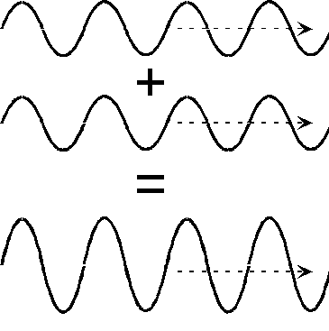

Sreeram Venkitesh's Website
Finding the right people
The cambridge dictionary defines the word 'synergy' as follows
Synergy - noun - /ˈsɪn.ə.dʒi/
The combined power of a group of things when they are working together that is greater than the total power achieved by each working separately.
Let us compare this with the concept of intereference from physics. You can think of this synergy to be similar to how waves of
different wavelengths interfere. Depending on the amount of overlap, the waves can either interfere constructively, producing a wave
of twice the amplitude ...

... or it can interfere destructively and create a wave with zero amplitude, i.e the two opposite forces cancel each other.

Although the word synergy was defined earlier in a positive sense, you probably would've met people with negative synergy at some point in your life. In most of such cases it is not that these people are inherently bad by themselves, but just that you as a person cannot get yourself to work with them. be it career or personal relationships or whatever.
This positive synergy with people plays a role in being your best self, where you are the most creative and efficient. The only way to find your wavelength is to interact and work with people from a varying spectrum. Talk to people who are outside your field of work or study, interact with people from other facets of life.
Sometimes you already know that you don't wanna spend time with someone but is forced to because of the circumstances. This may happen frequently earlier in your career especially when you are enrolled in school or university. Don't worry if you have had to face situations like these. It'll come in handy in the future when you realize that you can now understand what kind of a person someone is after meeting them or interacting with them briefly. Thank the people who gave you a hard time in the past for this superpower.
That said, the best way to address such a situation is to become a positive synergy person yourself. Your energy and enthusiasm affects those around you in a manner you can never expect. So let us all become better humans so that people around us can't help but feel positive :)
Image Source - Dept of Physics, University of Connecticut